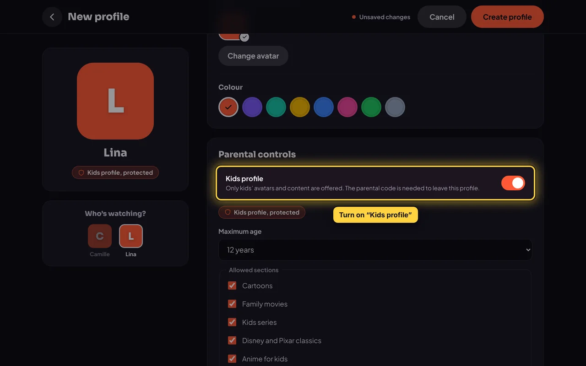
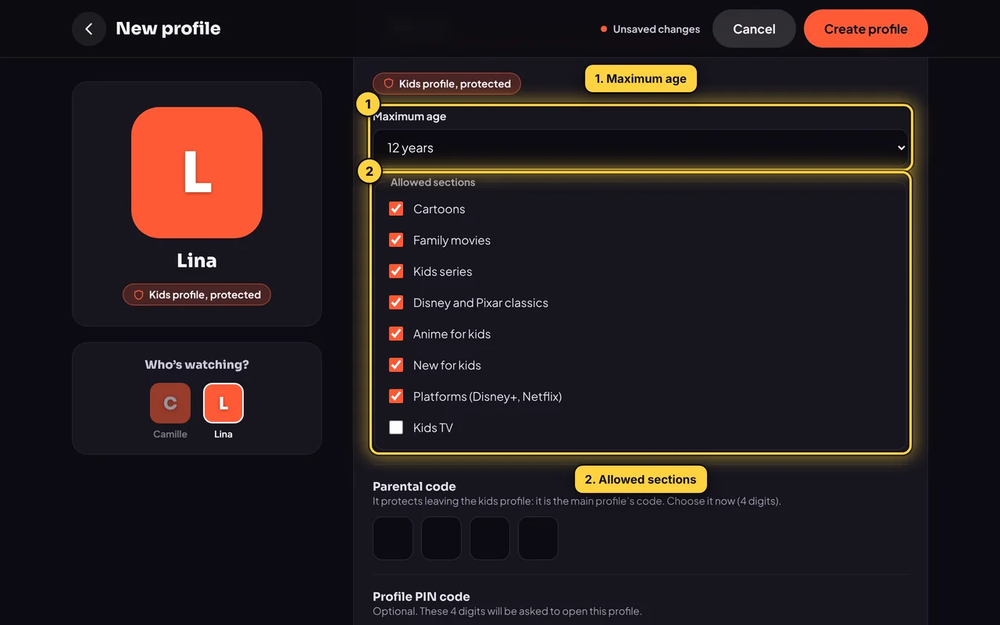
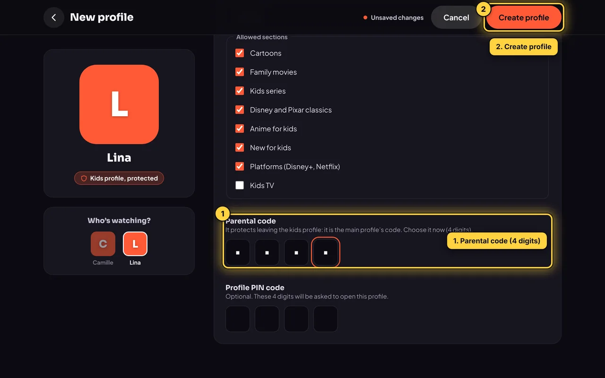
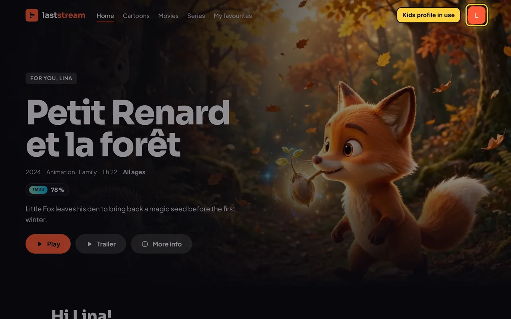
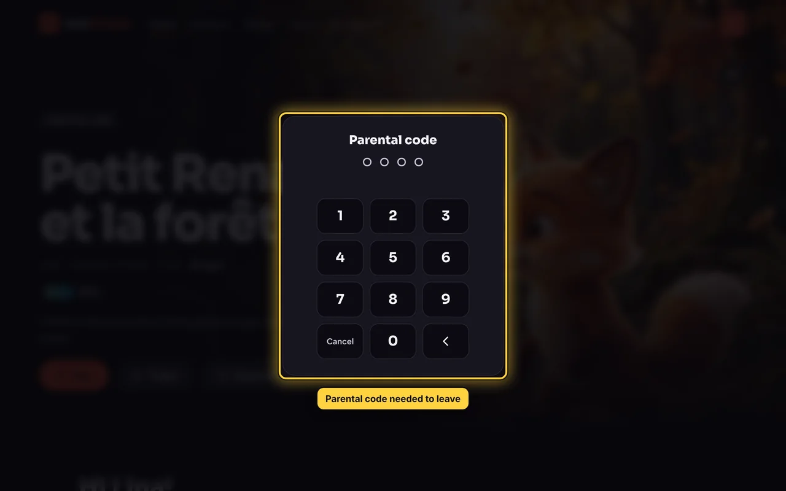

Steps
On each screenshot, the yellow frame shows where to tap or click; the numbers give the order. The app is in French: the screenshots show its English translation.
-
Open “New profile” as in the Create a profile guide (avatar, “Switch profile”, “Add a profile”), then type their name.
-
Under “Parental controls”, turn on “Kids profile”.

-
Choose the “Maximum age” (1): 10, 12, 16 or 18 (12 by default). Tick the “Allowed sections” (2), see the table below.

-
If the main profile has no parental code yet, type a 4-digit one (1). It protects leaving the kids profile.
Tap “Create profile” (2).

-
Tap “Done”, then the kids profile: its home only shows titles for its age.

Allowed sections
| Section | Ticked by default |
|---|---|
| Cartoons | Yes |
| Family movies | Yes |
| Kids series | Yes |
| Disney and Pixar classics | Yes |
| Anime for kids | Yes |
| New for kids | Yes |
| Platforms (Disney+, Netflix) | Yes |
| Kids TV | No |
Without “Kids TV”, the TV tab is hidden for the child.
Leaving the kids profile
Tap its avatar, then “Switch profile”: the parental code is asked.
